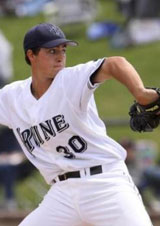

Jason CorderAcademy Director / Head ManagerSince the day I was born I have had a passion for the game of baseball. I was fortunate enough through dedication, passion, and work ethic to play the game at the highest level one can play. With my accomplishments it is my desire to give back to the younger generation and instruct them of the tools needed to play the game of baseball at the next level (high school baseball).
|
|
Steve WolfsonManager / Academy COO / Academy CFO10 years coaching experience, played in the Minnesota Twins organization, emphasis on fielding, hitting and pitching skills.
|
|
 |
Steven RodriguezAssistant Academy CoachBaseball has been a part of my life since I could hold a baseball. I have a strong love and respect for the game. I have been blessed to compete at the high school and collegiate level. Thankfully, I have been very fortunate to play and compete for many exceptional coaches who have given me a great knowledge of the game. It is a goal and desire of mine to help coach the up and coming generation of ball players and help them reach their full potential as a baseball player and individuals.
|
|  |
Alex AgortsasAssistant Academy Coach / Head Trainer / Catching Coach
Alex has been playing baseball from a very young age. He has a real passion towards the game of baseball and expects perfection. Alex has played many position throughout his baseball career with his main position being a catcher. Alex will help the academy out an many ways, he will specifically be working with our catchers and running our agility workouts. To date he is the assistant coach a Irvine Valley Community College. Alex will be starting with the academy as a roving coach that will work specifically with the catchers. If your son is interested in catching specific lessons please contact Alex for details.
|
Shane MaguireAssistant Academy Coach / Pitching Coach / ManagerShane has been around the game of baseball from a very young age. He is passionate about the game and wants to teach the game to be played the "right way" through teaching the mental side of the game along with the proper mechanics. Shane has dealt with a lot of arm injuries throughout his baseball career and he will would like to help prevent the younger generation from having the same problems by passing on the knowledge he has acquired through the years he played along with coached.
Shane is currently pursuing a career in professional scouting through the MLB Scouting Bureau. |